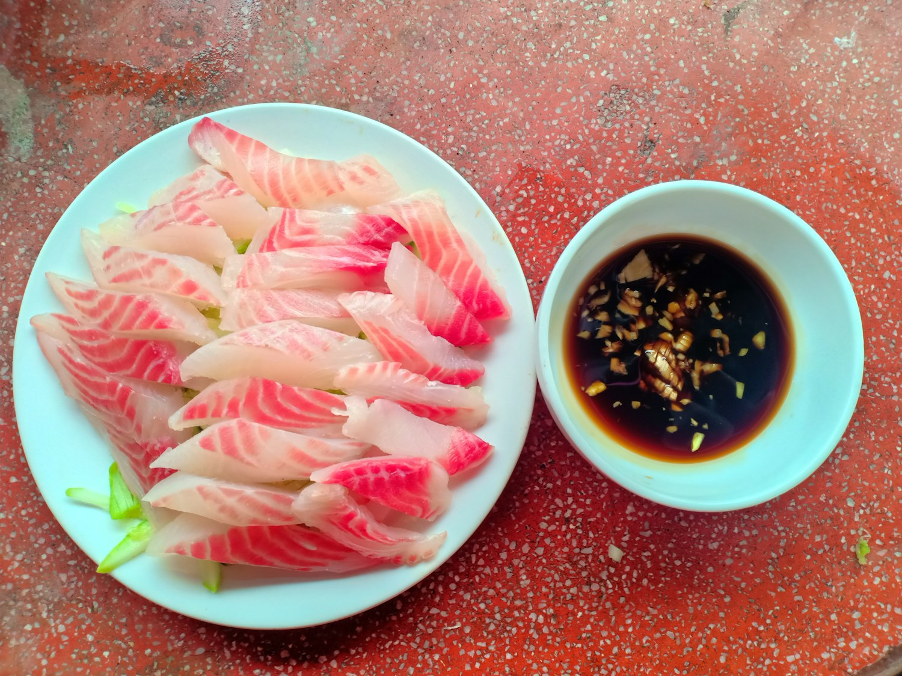
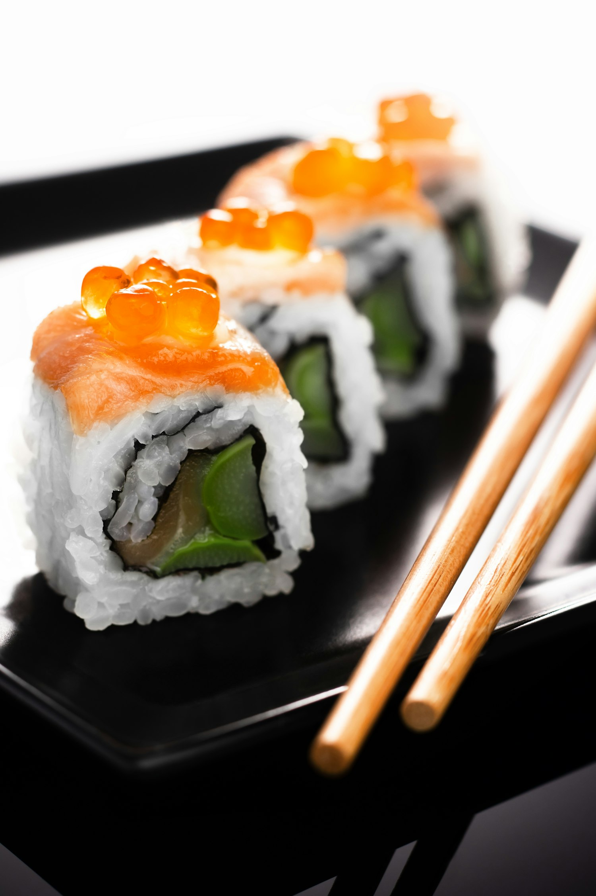
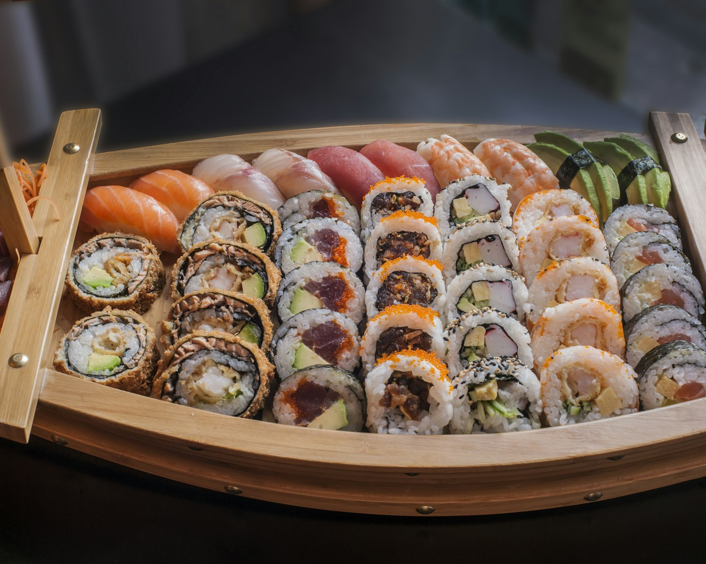
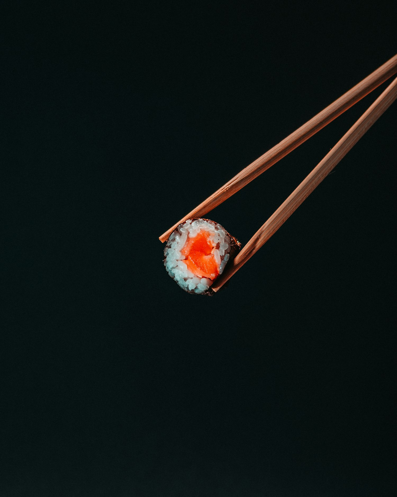
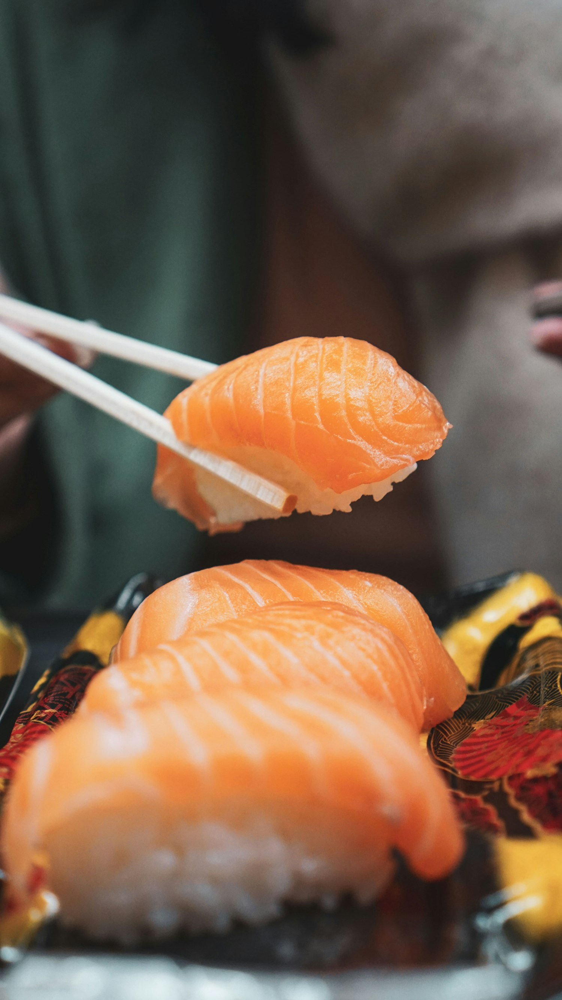

お任せ — We leave it to the chef
The progression below is this week's. By next, the sea will have changed its mind — and so will we.
献立 — This week's progression
Dietary needs are met with notice — tell us when you reserve and the chef will compose toward you. The kitchen is not nut-free. Pricing is per guest; an optional sake & tea pairing is offered at the counter.
Chilled corn custard, sea grape, a drop of olio nuovo. The first turn toward the light.
Three cuts from today's box — flounder, aji, akami — dressed only in citrus and salt.
Clear dashi, grilled hamo, a single leaf of shiso grown on the sill.
The season on one tray — eight small bites between sea and garden.
Aged four days, brushed warm, charred citrus skin.
Nine days rested, olio nuovo, one bite. The dish people write to us about.
Simmered until it gives, lacquered, a dusting of sansho.
Santa Barbara urchin over warm rice, Ligurian oil, a flake of Maldon.
A single slice over binchō embers, fermented plum, fennel pollen.
Two, made to order — toro & chive, then the day's wild card.
The counter's signature — egg, shrimp, and honey, cooked slow as a cake.
A quiet bowl to close the savory road.
Our own sill-grown lemon, the last of the morning's oil. The sun, set.
¥
Thirteen courses at the counter, chef-led. Table service offers an eight-course tasting at $185. Sake & tea pairing, $95.
器 — The week in pictures



